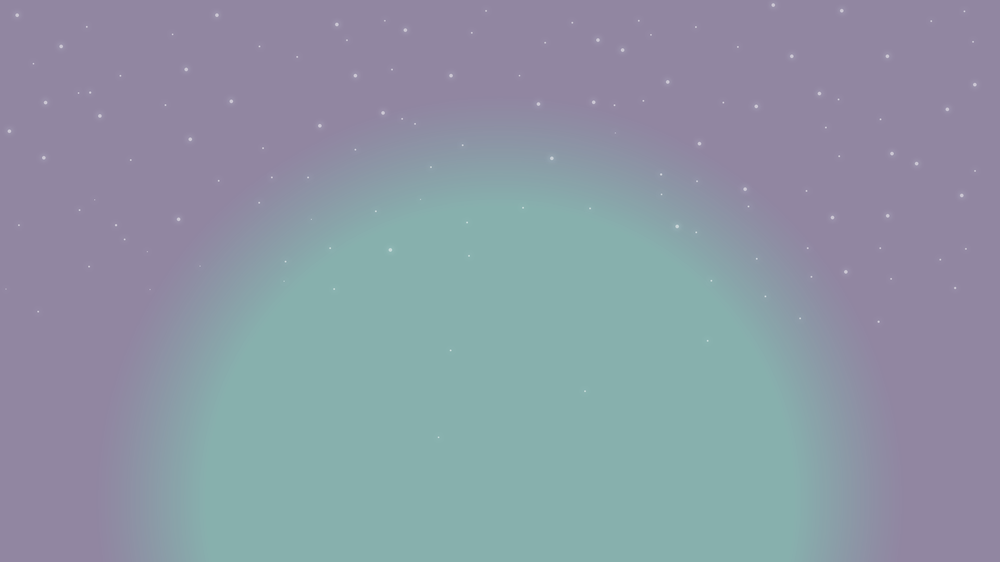
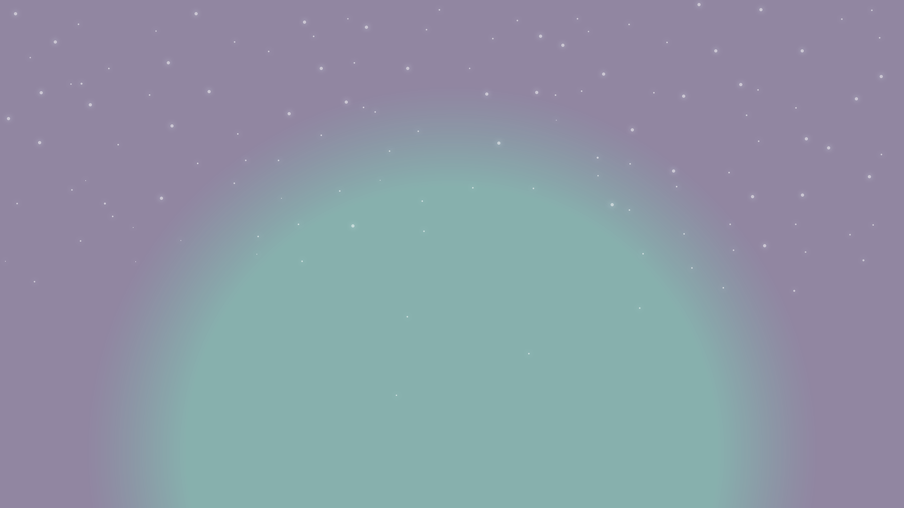
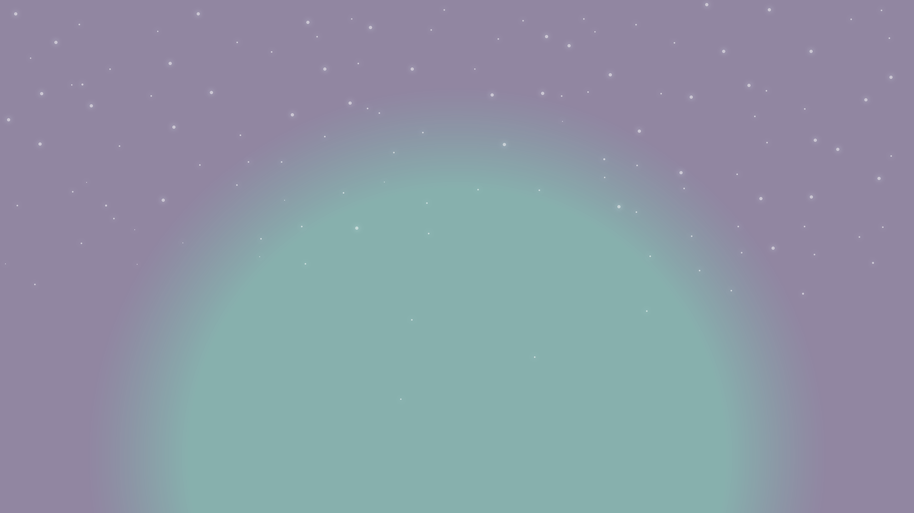
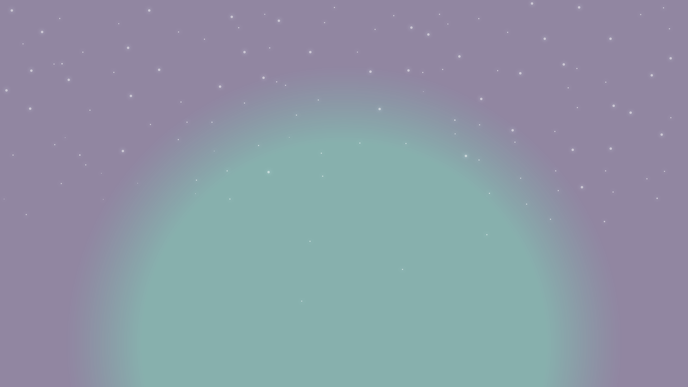

Once upon a time, there was a beautiful island. In the island meadows, there lived a young fairy named Isotopia. She had a pet monkey named Poppy. Isotopia and Poppy were simple beings with simple tastes and lifestyle. They lived in a small, simply furnished house. On the same island, there also lived a Unicorn, who had a special ability of flying very high and far. The only dream of Isotopia was that some day, she would ride on the Unicorn.
One day, Isotopia was alone at home and Poppy had gone to eat some bananas. When he climbed a banana tree and started eating, he saw that the Unicorn was also standing down below. He was looking at him. Poppy was not an ordinary monkey. He was very wise and could understand the language of every animal on the island. He dropped down some bananas to the Unicorn also, and said, “Would you allow me to ride on your back some day?”
The Unicorn replied “You have fed me tasty fruits. You can surely ride on me.” Poppy was exhilarated! He jumped on the Unicorn’s back and the Unicorn flew high up in the sky. Poppy enjoyed very much. When the Unicorn landed down, Poppy said “Thanks for the ride. I had never imagined how different an experience this would be! I am Poppy. What’s your name?”
Poppy said “Of course, I’ll be your friend” They played together. When it was late, Poppy said good bye to Euno. On reaching home, he told Isotopia all about the Unicorn. She exclaimed “Oh! How wonderful! I wish I could ride on him as well! Poppy, please will you take me to the Unicorn tomorrow?” Poppy accepted her request.
Next day, when they went to meet Euno, they saw that five wicked men had tied Euno with a rope, were pulling him & forcing him to go with them. Isotopia asked, “Why are you doing this to the poor Unicorn?” One of the men answered “Say nothing, girl! A unicorn is a very rare find! We are Iucky to come across him. We will earn loads of money from him.” And saying this, the man pushed back Isotopia. The five wicked men then took away Euno. Isotopia and Poppy felt sad for Euno, but those five men, from the neighbouring village on the island, were famous for their notoriety, so Isotopia and Poppy decided to keep silent. They knew where the men lived. They made a plan to save Euno.
When night fell, they went to the men’s home. Then, they secretly added a sleeping potion in their food. Unfortunately, only two of the men ate that food and fell into a deep sleep. The remaining three men had dinner outside & were sleeping in another room. Isotopia locked the door of that room from outside. Now Poppy tried to untie the rope with which Euno was tied. But the rope was fastened very tightly. So, when Poppy tried to open the rope, Euno got hurt and uttered a cry of pain. The three men woke up, while two were in a deep sleep. They understood that Euno’s friends had come to free him, but found that their door was locked from outside. They started pushing & kicking the door, and after few minutes, managed to break the door and came out. When they came out, suddenly Euno’s rope came free. The men came running towards them,